Blue Pencil 是一种 2D 绘制工具，可用于在 3D 空间中绘制。Blue Pencil 取代了 Maya 先前的绘图工具“油性铅笔”(Grease Pencil)，并为动画和审阅提供了更全面的绘图工具。可以使用 Blue Pencil 工具在视口中的帧上进行绘制，您可以对这些帧进行分层、编辑、重定时和导出。
若要使用 Blue Pencil 在视口中进行绘制，请执行下列操作之一：
- 单击面板工具栏中的 Blue Pencil 图标 。
- 从“动画”(Animation)菜单集 (F4) 中选择。
提示： 将双虚线拖动到工具栏的左侧以重新定位它或创建一个独立的工具栏。
| 目标 | 操作 |
|---|---|
| 打开 Blue Pencil 工具栏 | 从面板工具栏中选择 Blue Pencil 图标 。还可以从“动画”(Animation)菜单集 (F4) 中选择。
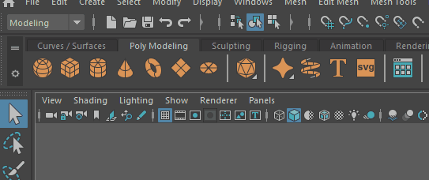
有关每个图标表示的工具的概述，请参见 Blue Pencil 工具栏。
|
| 关闭 Blue Pencil 工具栏 |
若要关闭 Blue Pencil 工具栏，请单击右上角的 X。 注： 单击 X 将关闭工具栏，但 Blue Pencil 仍保持活动状态。
若要退出 Blue Pencil，请按 Q 键或切换到另一个工具。 |
| 更改 Blue Pencil 设置 |
若要更改笔划大小，请按 B 键并在视口中拖动。
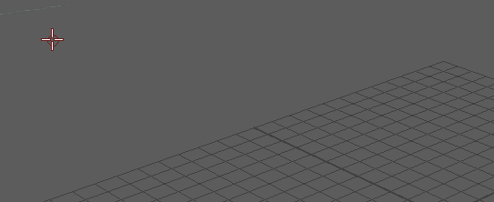
若要更改不透明度，请按 M 键并在视口中拖动。
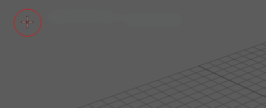
还可以在 Blue Pencil 工具栏中的工具上单击鼠标右键以显示相关设置。有关详细信息，请参见调整 Blue Pencil 工具。
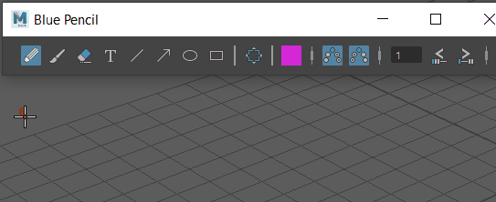
在 Blue Pencil 工具设置中提供了更多选项以及 Blue Pencil 层管理器。
有关如何打开 Blue Pencil 工具设置，请参见以下行 |
| 打开 Blue Pencil 工具设置 | 当 Blue Pencil 是活动工具时，双击工具箱的“上次使用的工具”(Last Used Tool)区域中的 Blue Pencil 图标。 |
| 添加 Blue Pencil 帧以进行绘制 |
在视口中开始绘制，会自动创建一个帧。 还可以单击 Blue Pencil 工具栏上的“添加帧”(Add Frame) 。 |
| 同时创建多个 Blue Pencil 帧 | 按住 Shift 键并在时间滑块上选择一个范围，然后选择 ，以便为选定范围中的每个帧创建一个帧。
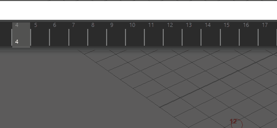
|
| 打开 Blue Pencil 标记菜单 | 使用 Blue Pencil 时，按住 Shift + Ctrl 键并单击鼠标右键以打开标记菜单，以便可以在工具和功能之间切换。
有关详细信息，请参见 Blue Pencil 标记菜单。
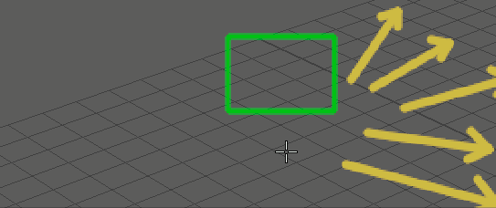
|
| 前进帧 | 单击“跳转到上一帧”(Jump to Previous Frame)  或“跳转到下一帧”(Jump to Next Frame) 。 或“跳转到下一帧”(Jump to Next Frame) 。
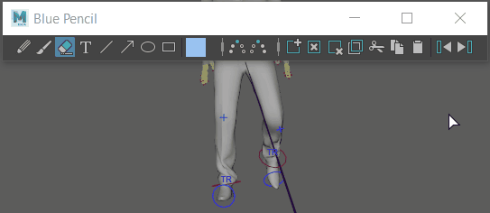
|
| 添加文字 | 单击“文本”(Text)工具图标 ，然后开始键入。
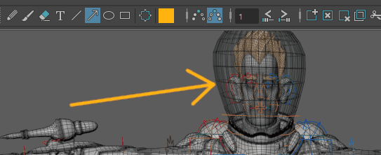
注： 目前，Blue Pencil 文本不支持中文或日语字符集。若要使用中文或日语字符集，请从文本编辑器将其复制并粘贴到 Blue Pencil。
|
| 修改图形 | 单击“变换”(Transform)图标 ，然后在视口中拖动以选择区域。（还可以在图形上单击鼠标右键并选择“变换”(Transform)）
操纵选择后，按 Enter 键（或在选择上单击鼠标右键并选择“应用变换”(Apply Transform)）进行设置。
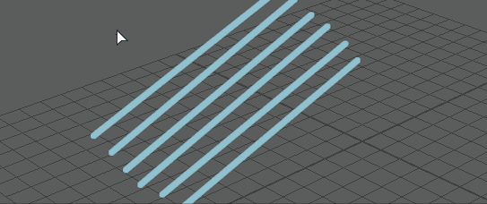
使用键盘快捷键移动、旋转和缩放图形。有关详细信息，请参见使用 Blue Pencil 变换模式修改图形。
|
| 擦除图形的一部分 | 单击“橡皮擦”(Eraser)图标  ，然后在要擦除的图像部分上拖动光标。 ，然后在要擦除的图像部分上拖动光标。
|
| 重影帧 | 单击“重影上一个”(Ghost Previous) 或“重影下一个”(Ghost Next) 图标，以显示之前和之后出现的 Blue Pencil 帧。
在“重影”(Ghost)图标上单击鼠标右键，以设置显示的帧数和颜色。
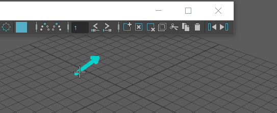
|
| 在时间滑块上移动 Blue Pencil 帧。 | 按住 Shift 键并单击时间滑块上的一个或多个帧，高亮显示后，将其拖动到新位置。
可以按住 Shift 键并拖动多个帧。 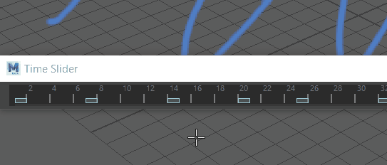
若要按特定增量移动一个或多个帧，请参见下面的在时间滑块上重定时 Blue Pencil 帧。 |
| 在时间滑块上重定时 Blue Pencil 帧 | 单击“向后重定时”(Retime Backward) 或“向前重定时”(Retime Forward) ，将当前帧之后的帧移动“重定时”(Retime)图标旁边的“帧范围”(Frame Range)字段中设置的帧数。
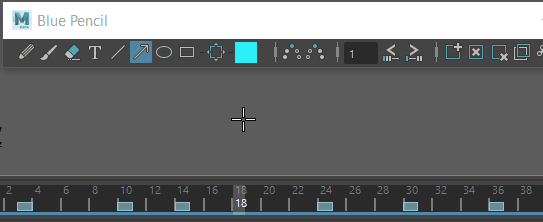
有关详细信息，请参见使用 Blue Pencil 帧。 |
| 将 Blue Pencil 层添加到层管理器中。 | 在场景中绘制，会为当前摄影机视图创建一个层。还可以在层管理器中单击“添加新层”(Add New Layer)图标  。 。
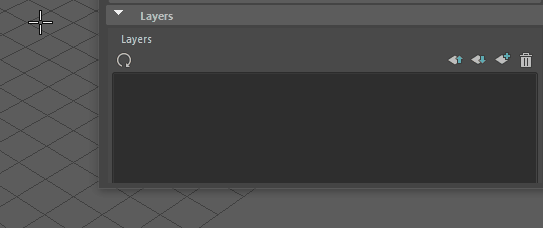
有关详细信息，请参见管理 Blue Pencil 层。
|
| 使用“复制上一帧”(Duplicate Previous Frame)创建动画导向 | 使用“复制上一帧”(Duplicate Previous Frame)  从先前的帧复制草图，然后对其进行变换以创建动画草图序列。 从先前的帧复制草图，然后对其进行变换以创建动画草图序列。
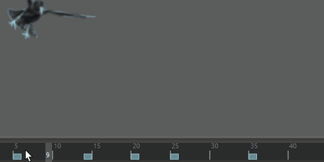
有关详细信息，请参见使用 Blue Pencil 帧。 |
| 保存 Blue Pencil 图形 | 使用 Blue Pencil 工具栏中的“导出帧”(Export Frames) 选项将图形导出为 .zip 文件。请参见导入或导出 Blue Pencil 帧。 |
| 在绘图板中使用 Blue Pencil 进行绘制 | 使用界面首选项(Interface Preferences)中的“绘图板 API”(Tablet API)设置为绘图板配置 Maya。（另请参见将绘图板与 Blue Pencil 结合使用） |
 。
。
 擦除整个帧的内容（而不删除帧）。有关详细信息，请参见
擦除整个帧的内容（而不删除帧）。有关详细信息，请参见